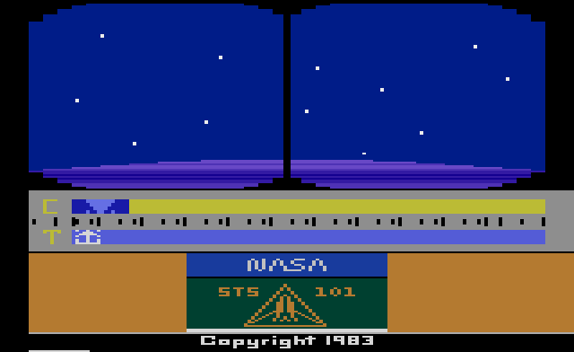
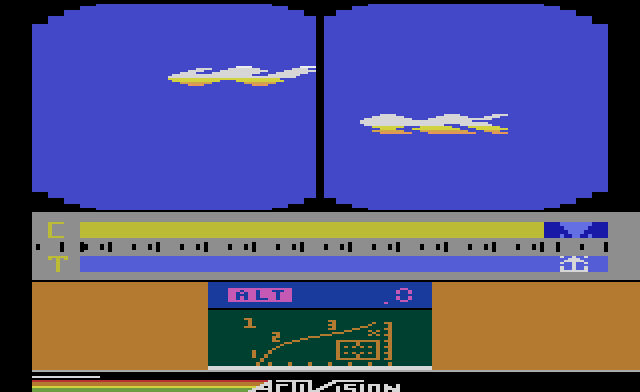
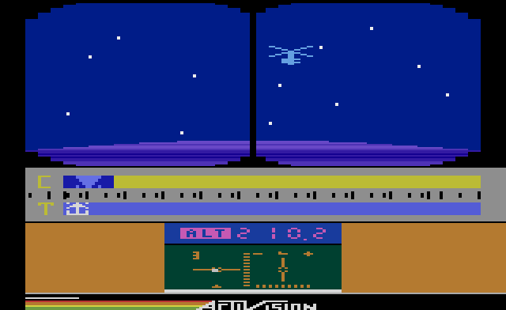
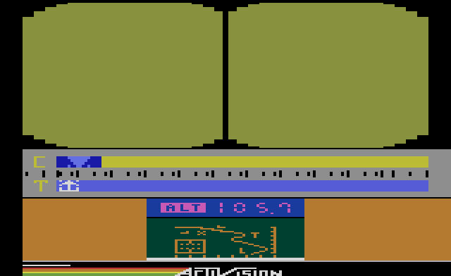
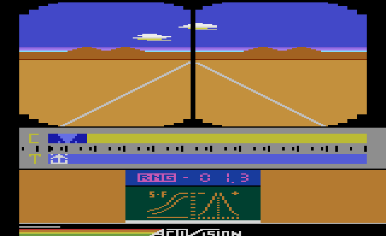

Space Shuttle
Steve Kitchen's flight simulator: launch the Discovery from Cape Canaveral, dock with a tumbling satellite 210 nautical miles up, burn for home and land at Edwards, with every console switch wired into the cockpit. The cartridge's own program, translated into JavaScript one instruction at a time with every cycle counted, so the flight behaves exactly as on the console.

How to fly
Your mission is STS 101: reach orbit, rendezvous and dock with a satellite whose gyroscopes are deliberately misbehaving, as many times as you can on as little fuel as you can, then come home. Every console switch is a cockpit control, so the switches under the screen matter as much as the joystick. Start with flight 1: it flies the whole mission by itself, and hands you the controls when you touch the joystick.
Flight deck console
- Status (flight select, readouts)hold X
- Activate Countdownhold Enter
- Primary Engines on / shut downE
- Backup Engines on / shut downB
- Cargo Doors / Landing GearC
- Hand controller · its buttonarrows / WASD · Space
- Pause · MuteP · M
On a real 2600 these are Game Select, Game Reset, the Color/B&W switch and the two difficulty switches. The Backup Engines are for consoles where the Color/B&W switch is hard to reach; otherwise leave them shut down.
Three flights
1 · Autosimulator. A demonstration that flies an abbreviated mission. Touch the joystick and you have the controls.
2 · Simulator. The real procedure, but fuel is never used up and the computers forgive most mistakes.
3 · STS 101. The full flight: every abort is live. Your rank at the end depends on how many dockings you made and the fuel you have left.
Hold Status before the countdown to change the flight number.
Launch, step by step
- Primary and Backup Engines shut down, cargo doors closed: the countdown won't start otherwise.
- Hold Activate Countdown.
- At MET−015, Primary Engines on.
- At MET−004, hold the button to ignite, and keep the thrust arrow T on the computer's arrow C.
- Follow the trajectory on the tracking screen; left and right correct your plane.
- Shut down at about 205 nautical miles.
- Stable orbit: engines on, pitch the nose down to −28, engines off, then open the cargo bay doors within the first orbit, or the heat builds up and the mission is aborted.
- Docking: match the satellite's speed (mach 23.9) and line up on all three axes. Each successful docking earns fuel; each one after it is harder.
- Deorbit and reentry: let the satellite drift 128 miles away, turn tail-first, burn down to mach 19.0, then turn back nose-first for reentry.
- Landing: lower the gear (the same switch as the doors) and put it down at Edwards Air Force Base.
The mission




Built from the ROM
This is not an emulator, and not a remake. The cartridge was disassembled from scratch (no published source existed), reassembled to prove the disassembly byte for byte identical to the cartridge, and then a translator wrote out each instruction as a line of JavaScript with its cycle count. The translated game runs on a model of the 2600's TIA and RIOT chips, and a 6502 core runs the real ROM beside it to prove the two match.
- The cartridge has two 4K banks and switches them every frame: the game logic jumps to the start of its bank, where the first instruction reads a hotspot address that selects the other bank, which then carries on with the screen.
- The engine check reads the Color/B&W switch and the left difficulty switch together, so either one fires the engines: that is how the Backup Engines can stand in for the Primary ones.
- Before the countdown will start, the code checks that both engine switches and the cargo door switch are all off.
- In fifteen places one instruction hides another: a
BITinstruction swallows the next two bytes on one path, while another path jumps straight into them.